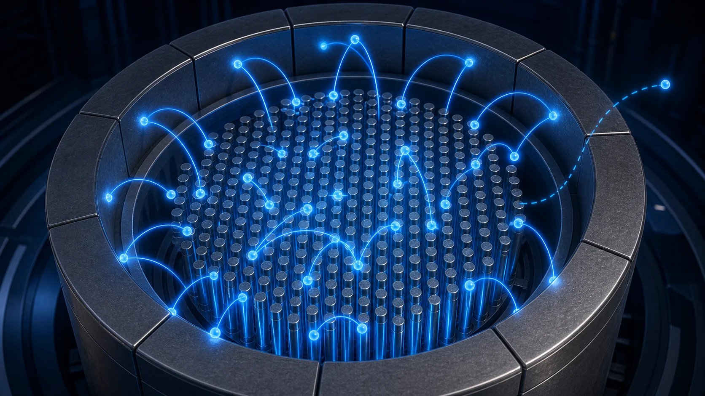
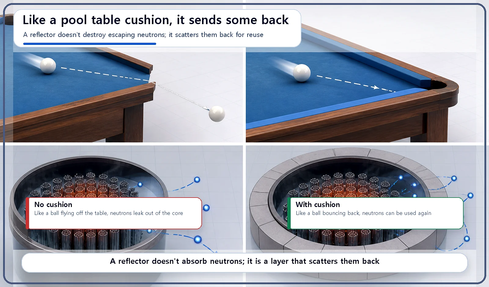
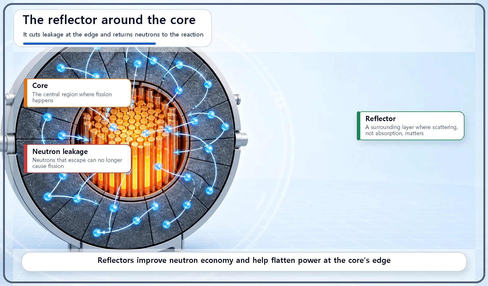

Reactor Components · 059
The Pool Table Cushion of the Core — How a Neutron Reflector Sends Neutrons Back
Like the cushion on a pool table, a reflector bounces escaping neutrons back into the core so they can still cause fission.

A reflector is a layer of material around the core that scatters would-be escaping neutrons back into the core, like the cushion on a pool table. It does not absorb neutrons; it returns them, so the core uses its neutrons more efficiently.
The moment a ball hits the cushion
Ever played pool? If a ball jumps over the edge of the table and lands on the floor, it's out of the game for good. Hit the rubber cushion that lines the rails, though, and the story changes: the ball bounces straight back onto the table and play goes on.
Parts such as the moderator, the coolant, control rods and borated water handle neutrons inside the core. This time let's move our attention to the core's edge. There's a component there that does exactly what a pool table cushion does. It's called the reflector.
What does it mean for neutrons to "leak"?
Some of the neutrons born from fission in the core never meet another nucleus. They simply punch straight through the edge of the core and fly out. Neutrons escaping from the core like this are called neutron leakage. It's the same situation as a pool ball rolling off a table that has no cushions.
A neutron that has leaked out can no longer contribute to fission. So the more leakage there is, the less reaction you can get out of the same amount of fuel.

What the reflector does
A reflector is a separate layer of material that surrounds the core. When neutrons try to leave the core, it bounces some of them, by scattering, back toward the core. Same position, same job as the cushion on a pool table.
Good reflector materials are ones that absorb few neutrons but scatter them well, such as water, beryllium and graphite. In fact, in a light water reactor the coolant (water) that surrounds the core also works, to some extent, as a reflector.

What improves with a reflector?
Neutrons that would have leaked away and been lost get sent back and can be used for fission again. That means even a core of the same size uses its neutrons much more efficiently; engineers call this better neutron economy.
This opens up options. With a reflector, the core can stay critical with less fuel than it would need without one, or, for the same amount of fuel, the core can be designed smaller. A reflector also evens out the neutron distribution near the edge of the core, which helps in managing how power is distributed across the whole core.
Two common mix-ups
"A reflector is a device that absorbs neutrons and gets rid of them." No. A reflector sends neutrons back toward the core by scattering them, not by absorbing them. Getting rid of (absorbing) neutrons is the job of control rods and borated water.
"Reflectors and moderators have to be made of completely different materials." Not so. Materials that serve as moderators, such as water, beryllium and graphite, are often used as reflectors too. But the two roles differ in location and purpose: the moderator slows neutrons down inside the core, while the reflector turns them back at the core's edge.
Key takeaways
Neutrons that escape through the core's edge are called leakage, and the more leakage, the lower the reaction efficiency. A reflector scatters would-be escapees back into the core, just as a cushion keeps a pool ball in play. The result is better neutron economy, which can save fuel, allow a smaller core and help manage the power distribution.